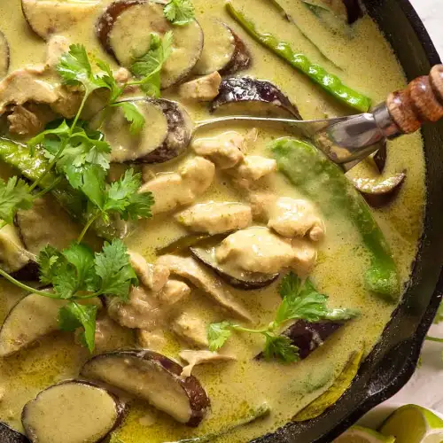

Thai Green Curry Recipe

Description:
What makes Thai curry so delicious is that it is the perfect blend of sweet, spicy and savory.
The coconut milk-base is not too thick and goes great with a spoonful of rice. In the curry is often a choice of meat
such as chicken or pork as well as vegetables, namely chopped bamboo shoots.
Ingredients:
- Thai basil
- Bamboo shoots, canned
- Red bell pepper
- Green curry paste, store bought or homemade
- Makrut lime leaves
- Full fat coconut milk
- Boneless skinless chicken thighs
- Chicken stock, unsalted
- Palm sugar
Steps:
- Get the paste as fine as possible
- Reduce the coconut milk until very thick
- Add the curry paste and saute for a few minutes.
- Toss chicken with the curry paste.
- Add coconut milk
- Add chicken stock
- Add makrut lime leaves.
- Simmer for 10-15 minutes until the chicken is fork tender.
- Add bamboo shoots and cook for a minute until the curry comes back to a boil.
- Stir in red bell pepper and turn off the heat.
- The green curry is now ready to serve with jasmine rice!
Return to Home